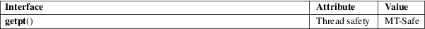

getpt − open a new pseudoterminal master
Standard C library (libc, −lc)
#define
_GNU_SOURCE /* See feature_test_macros(7) */
#include <stdlib.h>
int getpt(void);
getpt() opens a new pseudoterminal device and returns a file descriptor that refers to that device. It is equivalent to opening the pseudoterminal multiplexor device
open("/dev/ptmx", O_RDWR);
on Linux systems, though the pseudoterminal multiplexor device is located elsewhere on some systems that use the GNU C library.
getpt() returns an open file descriptor upon successful completion. Otherwise, it returns −1 and sets errno to indicate the error.
getpt() can fail with various errors described in open(2).
For an explanation of the terms used in this section, see attributes(7).

Use posix_openpt(3) instead.
GNU.
glibc 2.1.
grantpt(3), posix_openpt(3), ptsname(3), unlockpt(3), ptmx(4), pty(7)